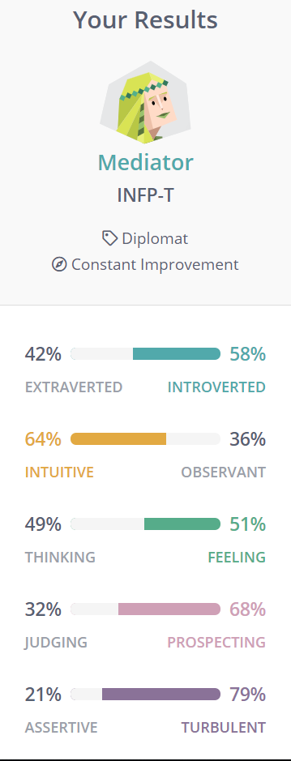
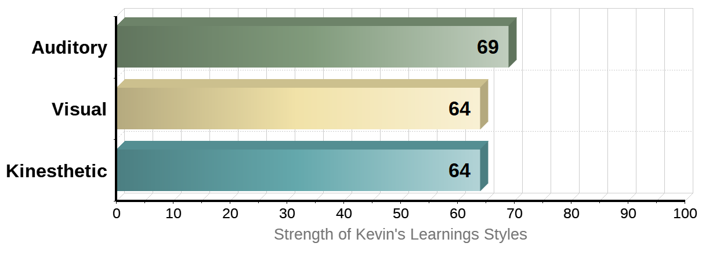
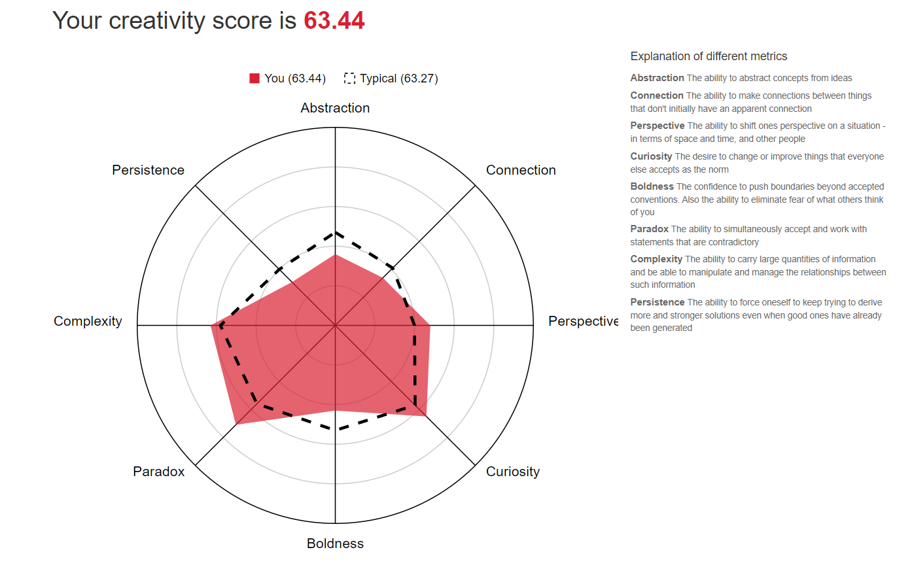

Personal information
- Name: Dang Anh Huy (Kevin)
- Student ID: s3819346
- Email address: kevindang2705@gmail.com
- Nationality: Vietnamese
Hobby: I love playing video games, especially a fast pace shooter game such as CS:GO or Call of Duty, I am also addicted to listening to music and watching movies mainly fantasy or action type of genres. When I am free, I usually take a language course, during this summer I have learn some French because I heard that it would be great if I could incorporate French into learning IT and for the reason that I also enjoy acquiring another language. There are some outdoor activities that I enjoy doing with my friends are swimming, bowling, or even karaoke, I usually do these activities to unwind from a laborious week of studying or after an exam.
Interest in IT
I have always been a tech addict since I was a child, my dad who is an enthusiast teach me a lot about technology and how it could have a great impact in the future and that gives me a tremendous passion to pursue this major. I regularly get to lay my hands on the newest technology and to understand the mechanisms of how things work.
In today's world, there is a lot of problems that relate to information leakage and that creates a huge exposure of user's data on the Internet unintentionally or sometimes on purpose. It could lead to the disclosure of sensitive data about a person's life, address, phone numbers or where do they live. Perhaps have a greater impact if a company's private project or design gets expose online, it would cause a lot of damage to the company's reputation. Therefore, I think it is my duty to pursue cybersecurity, it demonstrates how we can avoid and counter if someone is trying to exploit the data and then prevent that from happening.
The reason why I chose RMIT Saigon is that the infrastructure of this university is the best there is, and also studying in the international environment prepares me with a lot of useful skills and helps to elevate my communication skills. And there is a great chance that after you finish the program you have better opportunities than students at other universities in Vietnam.
After the Bachelor of IT course, I hope that I could be more confident and have no problem with coding and understand all about the coding language that I need, also an improvement of my lack of communication and social skills.
Ideal job
As I mentioned earlier, I would love to have a job in the information security department. I have found out an offer for this position at Home Credit Vietnam, which is an international corporation that provides financial support for people with little or no experience of lending. To secure a job at information security, I need to satisfied these requirements:
- About 2 years of experience operating application and testing websites.
- Thoroughly understand the design of web/mobile patterns and importance architecture.
- Distinguished knowledge of web security field.
- Acquaintance with Open Web Application Security Project (OWASP).
- I have to have experience in programming Python, Java, PowerShell.
- Evaluate and select from a variety of penetration testing tools.
This is a link to the website for further details:
Personal profile
I think that the results from the 16PersonalitiesTest are fairly accurate and it shows that I am a Mediator which is an introvert, an intuitive type of person and also has a turbulent personality but only when it reaches the limit. This makes Mediators became such a distinct character in comparison to others, which sometimes they could be misunderstood. However, when they find like-minded people who they can relate to, you can think of Mediators as a friend who is full of entertainment and inspiration. Working in a group with a Mediator can be difficult at first but and may take a while to fit in but when they do fit in, they will cooperate smoothly with the team. As for myself, I think I will listen to other people's ideas in the group before jumping into a conclusion.
According to the test I have finish, I excel at learning through hearing, which is auditory. Visual and kinesthetic both tied as secondary skills. I think that the results are very precise because I am truly good at listening to the lectures, and also not bad at learning by pictures and gestures. This will help in many situations in the group discussion, it shows that I am a good listener, plus my skills to study in other learning skill, I will not get confused in a discussion and can interact with other team members.
As can be seen in the creativity test I have conduct online, my creativity score is slightly above average at 63.44. I am more improved in remembering large quantities of information and to use them when needed, working with concepts that are contradictory, curiosity and capability to shift one's perspective. Besides, there are plenty of aspects that I lack such as, abstraction, find out the connections in the problem, the tenacity to develop and figured out the solutions and confidence, fear of what other people think of me. The result of this test resembles me quite well, sometimes in a team I can remind the team of huge amount of information and how to extract them to fit it in the assignment, I am interested in things what makes me want to know the origin of something I don’t know thoroughly and ability to get into a discussion and let people to understand my ideas. Besides, there are some that I don’t find myself to be above average, these things usually affect when working independently not as much in a group.
Project ideas
Overview: Recently, the presence of artificial intelligence (AI) have improved our lives remarkably, they now can replace human at doing simple task such as sales and marketing online, they can analyze the information faster than humans and the AI would do that without rest and at a much cheaper expense. In the future, jobs will revolve with automation and mechanization, AI will inevitably take over at jobs like communicating online with the customers or give customer service, they could source the information much faster and find solutions that have already been calculated so that they can have the best and quickest result.
Motivation: What if we replace the online service or customer service with chatbot? This is very interesting to me because applying software which remembers the client's information and interest is an improvement compared to what we have now, they will be able to store tons of data of the users which in some way makes the process easier and save a lot of time. There is an article about the prediction of the increase use of chatbot in business from Medium: “The new research, “Chatbots: Retail, eCommerce, Banking & Healthcare 2017–2022,” found that chatbots will save businesses over $8 billion per year by 2022, which is a huge increase from the $20 million expected in 2017.”
Description: Chatting online is commonly seen now as a preferable way to communicate, especially the millennial. By applying technology to chatting we now have chatbot, which is a software that answers questions through texting or audio. They scan and filter the words people type in then evaluate and process the information so that they could give a reasonable answer. I believe that computer specialist can program the chatbot in a way so that they could have simultaneously access the data and store those new information of the client, they will work as a filter and short out the unwanted details and give us what we wanted. This kind of software could be used in banking, customer service, dealing with complaints. Firstly, the use of chatbot in banking have been adapted in some banks around the world, namely, American Express, HSBC. These are some of the massive company which implements chatbot in the consumer service, they will have the personal information which will be supplied by the users before register to the bank, they will have the ability to track the data and usage of the specific client which improve the procedure. chatbot will be programmed to filter the questions of their customers and give them the answer they needed without wasting precious time, they could also skip some of the steps that are difficult to understand for elderly people or people that are not familiar with creating an account online which link to the bank by transfer the data from the bank to help complete the procedure. Secondly, in customer service, the developers could create any type of chatbot which is suitable for all age groups. For instance, there will be different types of personalities for the chatbox, there will be a one which handles the conversation with a formal way which is suitable for elderly or business people and there is the other one which is information that may get along well with the young age group, they will be able to remember the expression so that the more they interact with the users the more they learn from them. Lastly, dealing with complaints is somewhat vague to describe, for example, if a customer is making a complaint to the company the chatbot will learn from the previous problems and sort out what the trouble is and offer help immediately, they could use the tools that are already added to the program which help them to classify the information that they need. On top of that, by using chatbot companies will be able to save money and they do not have to worried about the staff members that much and there will only be maintenance once a year for the software, you will not have to worried about the leakage of information because it is secure and less access.
Tools and technology: One of the best software that you can use to develop a chatterbot is Drift, it helps to design chatbot to offer sales to customers in a smart and reliable way, it automates in planning sales and provide aid to increase conversion rate by at least 60%, grow business by 7-25% and more revenue according to Medium. There is also MobileMonkey which supports marketing on Facebook and you can make this without the need for coding. It includes a data range selector, a visual sketch for trends and other fundamentals. MobileMonkey prepare accessible templates for restaurants, dinner, offices. Aivo is an operating system that grants the users to apply AI into the chatbot, it can deal with empathy in real-time, it can learn from previous experience with different users and create its unique response in different situations.
Skills required: Get familiar with some of the platform used to create chatbot, it can be found online and easy to make for newbies, you will need to prepare yourself with language like Python, NodeJS, Java skills so that you are not confused with the system. For the database, MongoDB is the most favorable even though some people use MySQL.
Outcome: If this works out, company will be able to focus their spendings on other areas of the business, because now a small part of the company is automatized by the chatbot, every request from the customer is now been processed in a blink, they can work 24/7 throughout many years and the cost for maintenance is much cheaper than paying for employees. Both the company and the clients will not be confused when the system runs flawlessly, there will be no confusing answers and questions. Overall, this would be great if we could implement such technology to help improve our daily lives.